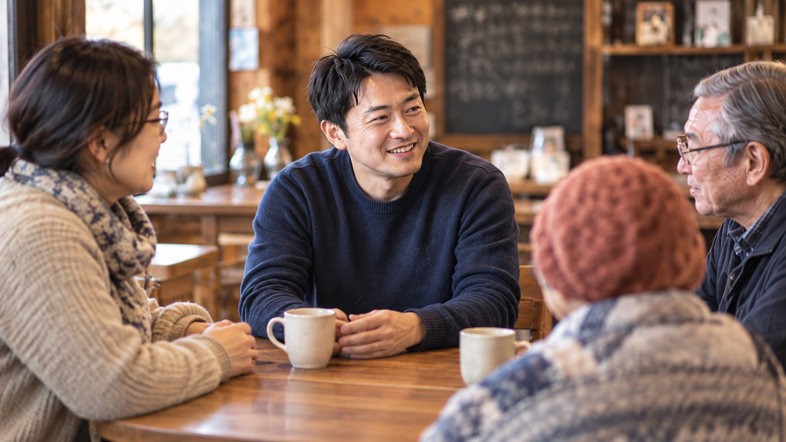
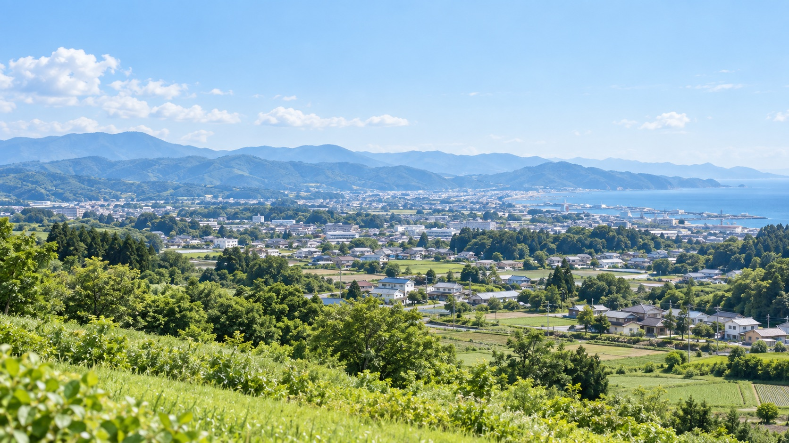

みんなの声が、
まちの力になる。
ここで暮らす人の
話を、これからも。

一人ひとりの声が、
まちを動かすはじまりです。
こんなことに取り組みます
取り組みの一覧 →
このまちの、
よい未来を一緒につくりたい。
声を、かたちに。
声を聞く
暮らしの中で感じることを、
丁寧に聴きます。
事実を確かめる
資料や現場を調べ、
課題を整理します。
小さく試す
できるところから、
試行して工夫します。
結果を伝える
成果をわかりやすく、
次の改善につなげます。
このまちで出会った
人たちと、これからも。
まちを考えるノート
取り組みたいことから南相馬のこれからを、
一緒に考えませんか？
小さな声から、
大きな一歩へ。